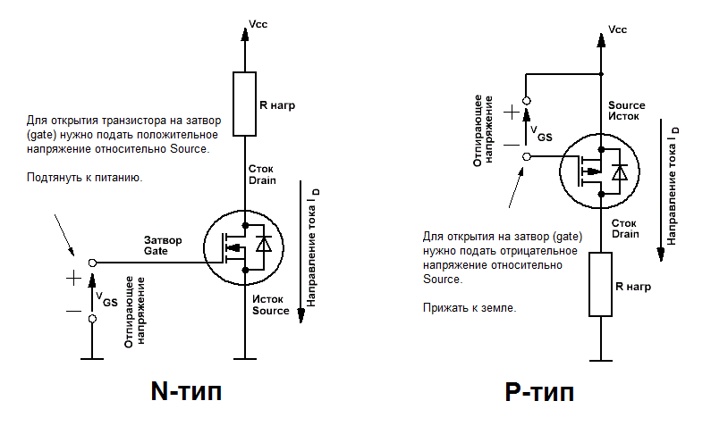
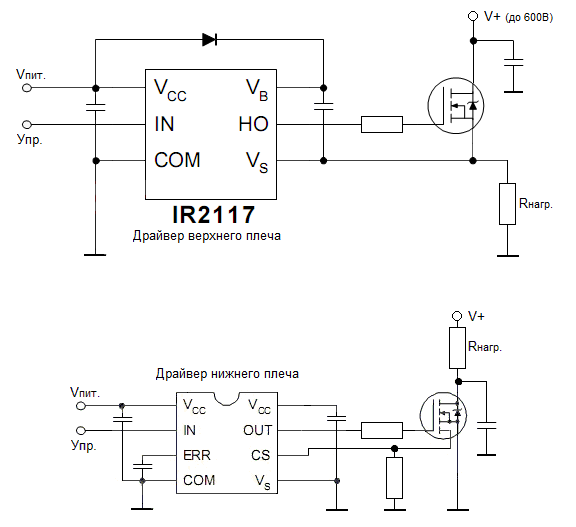

Ключ на полевых транзисторах
Полевые МОП-транзисторы (metal-oxide-semiconductor field effect transistor, сокращенно «MOSFET») очень удобны для использования в качестве ключа для управления мощной нагрузкой постоянного тока. Следует лишь соблюдать несколько простых правил при их использовании.

- Из-за того, что в открытом состоянии транзистор имеет очень малое сопротивление сток-исток, падение напряжения на нём мало. Именно поэтому имеет значение в какое "плечо" включать нагрузку. Например, для открытия полевого транзистора N-типа на затвор нужно подать положительное напряжение относительно истока - если при этом включить нагрузку в цепь истока, то напряжение на истоке будет равно:
Uпит - (I · Rотк.)
Здесь Rотк. это сопротивление открытого транзистора. Так как данное сопротивление мало (десятки-сотни миллиом), если притянуть затвор к питанию, разница напряжений между затвором и истоком будет недостаточна для полного открытия транзистора даже при большом токе. Данное ограничение можно обойти используя разные источники для питания нагрузки и для управления затвором, но нужно чётко понимать как это работает.
- Одна из особенностей подключения MOSFET транзистора к цифровым схемам - это необходимость подачи достаточного напряжения затвор-исток. В даташитах на транзистор пороговое напряжение затвор-исток (gate-source), при котором он начинает открываться называется gate threshold voltage (VGS). для полного открытия таким транзисторам надо подать на затвор довольно большое напряжение. Обычно это около 10 вольт, а микроконтроллер чаще всего может выдать максимум 5В. Есть несколько вариантов решения данной проблемы:
- На биполярных транзисторах соорудить цепочку, подающую питание с высоковольтной цепи на затвор.
- Применить специальную микросхему-драйвер, которая сама сформирует нужный управляющий сигнал и выровняет уровни между контроллером и транзистором. Типичные примеры драйверов это, например, IR2117. Надо только не забывать, что есть драйверы как верхнего так и нижнего плеча (или совмещенные, полумостовые). Выбор драйвера зависит от схемы включения нагрузки и коммутирующего транзистора. Для того, чтобы открыть N-канальный транзистор в верхнем плече, ему на затвор нужно подать напряжение выше напряжения стока, а это, по сути дела, выше напряжения питания. Для этого в драйвере верхнего плеча используется накачка напряжения. Этим и отличается драйвер нижнего плеча от драйвера верхнего плеча.

- Также возможно просто использовать транзистор с малым отпирающим напряжением (т.н. logic level транзисторы). Например из серии IRL630A или им подобные. У них открывающие напряжения привязаны к логическим уровням. У них правда есть один недостаток — их порой сложно достать. Если обычные мощные полевики уже не являются проблемой, то управляемые логическим уровнем бывают далеко не всегда.
- Никогда не оставляйте затвор "болтаться" в воздухе - так как транзистор управляется "полем", на затворе могут наводиться помехи от окружающих электро-магнитных полей, поэтому желательно всегда притягивать его через большое сопротивление либо к питанию, либо к земле, в зависимости от схемы. Сказанное верно, даже если вы используете микроконтроллер для управления транзистором - это поможет избежать неопределённых состояний, когда управляющее устройство, например, перезагружается.
- Наличие емкости на затворе создаёт бросок "зарядного" тока при открытии, поэтому для его ограничения рекомендуется ставить небольшой резистор в цепь затвора. Ограничив ток резистором вы также увеличите время открытия транзистора.
- Для шунтирования импульса тока, образующегося при отключении индуктивной нагрузки, добавляют быстрый защитный диод (TVS-диод), включённый параллельно истоку-стоку. Если имеется однонаправленный супрессор используется обратное включение, хотя допустимо также использовать двунаправленные TVS-диоды. Также, если транзисторы работают в мостовой или полумостовой схеме на высокой частоте (индукционные нагреватели, импульсные источники питания и т.п.), то в цепь стока встречно включается диод Шоттки для блокирования паразитного диода. Паразитный диод имеет большое время запирания, что может привести к сквозным токам и выходу транзисторов из строя.
- Если вы планируете использовать полевой транзистор в качестве быстрого высокочастотного ключа и\или для коммутации мощной или индуктивной нагрузки, необходимо использовать т.н. снабберные цепи - часть схемы, замыкающая токи переходных процессов на себя, уменьшая паразитный нагрев транзистора. Снаббер также защищает от самооткрывания транзистора при превышении скорости нарастания напряжения на выводах сток-исток.